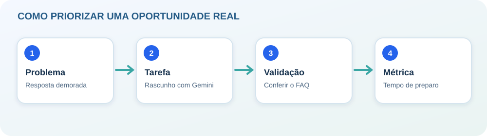

Encontrar onde a IA ajuda e priorizar uma dor real.
Entenda o exemplo
Comece pelo problema, não pela ferramenta.
Caixa de ferramentas: um martelo é ótimo, mas não serve para tudo.
Qual problema vale resolver?
A Café Horizonte recebe muitas perguntas repetidas, demora para criar posts e mantém anotações espalhadas. Não é necessário tentar resolver tudo ao mesmo tempo.
O que observar: Comece identificando um trabalho repetitivo ou demorado que realmente afeta o negócio.
A analogia da caixa de ferramentas
Você não usa um martelo para apertar um parafuso. Do mesmo modo, não vale colocar IA em toda tarefa. A ferramenta deve combinar com o problema.
O que observar: Uma boa oportunidade é útil, viável, de baixo risco e possível de medir.
Peça ajuda para priorizar
Solicite uma comparação das três dificuldades da cafeteria, com justificativas simples, sem inventar números.
O que observar: Veja se a recomendação considera custo, tempo, risco e possibilidade de conferência.
Escolha e meça
Se o problema escolhido for responder dúvidas frequentes, a equipe pode medir quantas respostas preparou com apoio da IA e quantas precisaram de correção.
O que observar: Não diga “melhorou 80%” sem uma medição real. Defina primeiro o que vai observar.
Leve para o seu contexto
Pense em um salão ou loja que você conhece. Escreva um problema frequente, uma forma de a IA ajudar e um indicador fácil de acompanhar.
O que observar: Seu indicador mostra uma mudança observável ou apenas uma impressão?

PRÁTICA
Experimente no Gemini
Liste 3 dores da cafeteria, escolha 1 e peça legenda + ideia de imagem.
A Café Horizonte enfrenta: muitas perguntas repetidas sobre horários, demora para preparar postagens e anotações desorganizadas. Sugira por qual problema começar a usar IA. Compare utilidade, facilidade, risco e como medir a melhoria. Não invente estatísticas.
Crie uma legenda de Instagram de 30 palavras e descreva uma imagem para divulgar o combo café + pão de queijo. Não cite preço nem prazo.